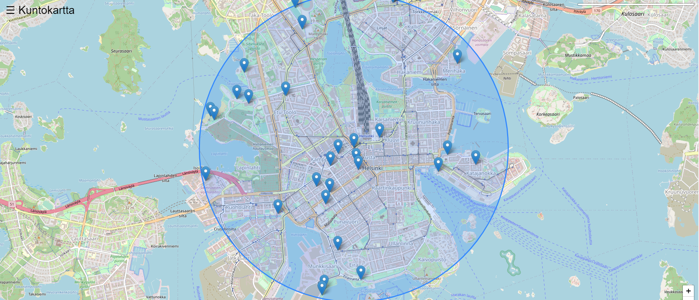
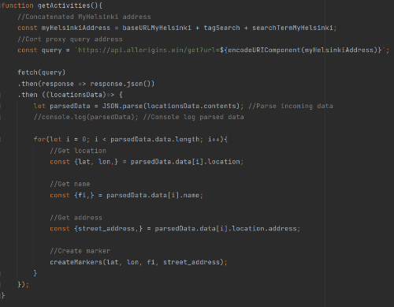

MIKÄ ON KUNTOKARTTA HENRI?
Kuntokartta HENRI on sivusto liikunnan harrastajille Helsingissä. Sivustolla on interaktiivinen kartta, jolla
käyttäjä voi etsiä haluamiaan liikuntapaikkoja (uimapaikkoja, kuntosaleja jne.) GPS-lokaatiostaan haluamallaan etäisyydellä. Markkeria klikattaessa
kuntokartan sivupalkkiin ilmestyy lisätietoja kohteesta. Kartta lisäksi reitittää matkan kohteeseen tämänhetkisestä lokaatiosta.
Käytetyt API:t
Käytetyt kirjastot
Lisäksi sivustolla on mainosvideo, tekijöiden yhteystiedot ja muuta infromaatiota liikunnan harrastajille. Sivuston sisältö mukautuu
useimpiin eri näyttökokoihin.
Kartta & koodiesimerkit
JavaScript (kartta)
HRI
MyHelsinki openapi

Get data from MyHelsinki API.
Leaflet
HTML ja CSS
Tähän esim. screenshotteja